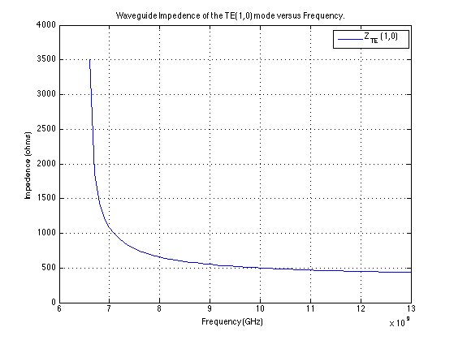

Calculate the Cutoff Frequency and Impedence for TM Waveguide.
Contents
Info
clc
clear all
Constants
e_0 = (1e-9/(36*pi));
u_0 = (4e-7*pi);
Given Parameters
f = 8e9;
a = 2.286e-2;
b = 1.016e-2;
m = 1;
n = 0;
Problem 1
fprintf('Problem 1\n\n');
modes = [ 1,0; 2,0,; 0,1; 1,1 ];
f_c = zeros(4,1);
polarization = [ 'TE '; 'TE '; 'TE '; 'TE,TM' ];
for i = 1:length(modes)
m = modes(i,1);
n = modes(i,2);
f_c(i) = 0.5 * (1/sqrt(u_0*e_0)) * sqrt((m/a)^2 + (n/b)^2);
fprintf('Mode: %s (%d,%d)\n', polarization(i,:), m, n );
fprintf('Cutoff Frequency: %0.3f GHz\n',f_c(i)*1e-9);
end
fprintf('\n\n');
Problem 1
Mode: TE (1,0)
Cutoff Frequency: 6.562 GHz
Mode: TE (2,0)
Cutoff Frequency: 13.123 GHz
Mode: TE (0,1)
Cutoff Frequency: 14.764 GHz
Mode: TE,TM (1,1)
Cutoff Frequency: 16.156 GHz
Problem 2
fprintf('Problem 2\n\n');
f = 8e9;
v_u = 1/sqrt(u_0 * e_0);
k = sqrt(1-(f_c(1)./f).^2);
lambda_u = v_u/f;
lambda_g = lambda_u ./ k;
etta_u = 120*pi;
Z = etta_u/k;
Z_0 = Z;
v_g = k*v_u;
fprintf('TE (1,0) Mode:\n');
fprintf('Guided Wavelength (lambda_g): %0.3f cm\n', 1e2*lambda_g);
fprintf('Impedence (Z): %0.3f Ohms\n', Z);
fprintf('Guided Velocity (V_G): %0.3f m/s\n',v_g);
fprintf('\n\n');
Problem 2
TE (1,0) Mode:
Guided Wavelength (lambda_g): 6.555 cm
Impedence (Z): 659.003 Ohms
Guided Velocity (V_G): 171618774.923 m/s
Problem 3
fprintf('Problem 3\n\n');
f = 8e9;
a = 2.286e-2;
b = 1.016e-2;
l = 1.63881e-2;
Z_L = 50;
w = 2*pi*f;
B_u = w * sqrt(u_0 * e_0);
k = sqrt(1-(f_c(1)./f).^2);
B_z = B_u*k;
Z_IN = Z_0 * ((Z_L + Z_0 * 1j * tan(B_z * l)) / (Z_0 + Z_L * 1j * tan(B_z * l)));
fprintf('Input Impedence: (Z_in): %0.2f k-Ohms angle: %0.2fº\n',abs(Z_IN)*1e-3, degrees(angle(Z_IN)));
fprintf('\n\n');
Problem 3
Input Impedence: (Z_in): 8.69 k-Ohms angle: -0.00º
Problem 4
fprintf('Problem 4\n');
f = 6.6e9:1e8:13e9;
m = 1;
n = 0;
f_c = 0.5 * (1/sqrt(u_0*e_0)) * sqrt((m/a)^2 + (n/b)^2);
v_u = 1/sqrt(u_0 * e_0);
k = sqrt(1-(f_c./f).^2);
lambda_u = v_u./f;
lambda_g = lambda_u ./ k;
etta_u = 120*pi;
Z = etta_u ./ k;
plot(f,Z);
title('Waveguide Impedence of the TE(1,0) mode versus Frequency.')
legend('Z_{TE} (1,0)');
xlabel('Frequency (GHz)');
ylabel('Impedence (ohms)');
grid on;
Problem 4
